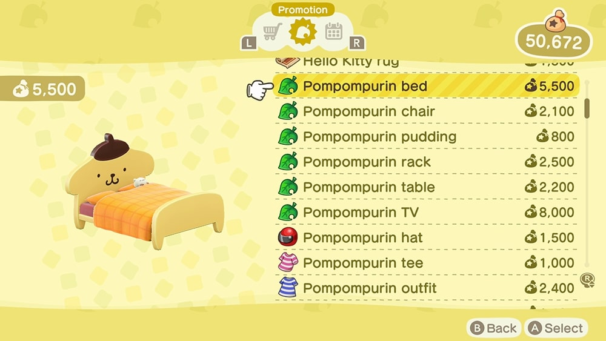

The Kiki & Lala Bed is a houseware item in Animal Crossing: New Horizons introduced in the 1.9.0 Free Update. It is part of the Kiki & Lala Series. The player is able to lie down on this item. If inside the player's house, the player can use the Kiki & Lala Bed to enter a dream island by laying down and choosing to go to sleep.
The Kiki & Lala Bed can be obtained from Nook Shopping, after scanning Étoile's amiibo card in Photopia for 5,500 Bells.
This item appears as a furniture item in the homes of Étoile. As a result, this item has a chance to be purchasable by the player if they were invited by any of the preceding villagers.

The Pompompurin Bed is a houseware item in Animal Crossing: New Horizons introduced in the 1.9.0 Free Update. It is part of the Pompompurin Series. The player is able to lie down on this item. If inside the player's house, the player can use the Pompompurin Bed to enter a dream island by laying down and choosing to go to sleep.
The Pompompurin Bed can be obtained from Nook Shopping for 5,500 Bells after scanning Marty's amiibo card in Photopia or inviting him to the campsite.
This item appears as a furniture item in the homes of Marty. As a result, this item has a chance to be purchasable by the player if they were invited by any of the preceding villagers.